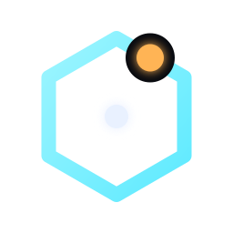
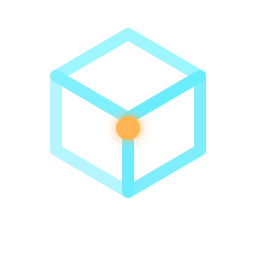
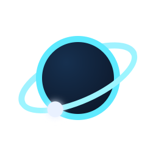

六边形能量门环，右上棱边一枚琥珀星点破环而入，门心一点白芯——「推开这扇门，进入 OmniSpace」。缺口与星点构成记忆点。

等距线框立方体三面三亮度（对话/图像/视频三能力），体内一枚琥珀核心发光——「一个空间，全向能力」。最「工程感」的一版。

深空星球 + 倾斜轨道环前亮后暗（空间纵深感），轨道上一枚白色卫星节点——「Omni+Space」最直白的宇宙叙事。注：16px 极小尺寸下轨道会简化为「圆+环」，小尺寸辨识实测 A 版最佳。
